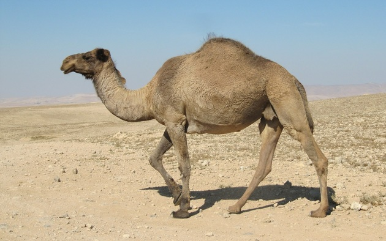
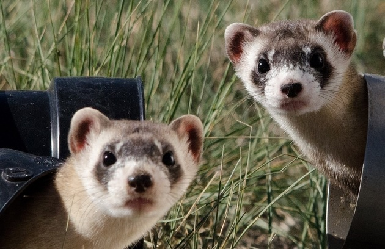

Dromedário
Camelus dromedarius
| Reino: | Animalia |
| Classe: | Mammalia |
O dromedário (Camelus dromedarius) é um animal mamífero
nativo da região nordeste da África e da parte ocidental da Ásia, pertencente à família Camelidae,
sendo um parente próximo dos camelos.
O dromedário ou camelo árabe distingue-se do camelo bactriano,
nativo da Ásia Central, pela presença de apenas uma bossa ou corcova, enquanto o camelo tem duas. A bossa ou
corcova do dromedário não armazena água (ao contrário da lenda popular), mas sim gordura, acumulada pelo
animal em períodos de alimentação abundante, que lhe permite sobreviver em condições de escassez. A água é
acumulada em sua corrente sanguínea, onde seus glóbulos vermelhos podem aumentar em até duzentos e cinquenta
por cento seu volume para acumulá-la.
Outras adaptações à vida no deserto incluem: uma pelagem esparsa e suave que permite
refrigeração, variando do branco-sujo ao bege-claro ou castanho-escuro; suas patas, que têm base larga, com
uma área que impede que se enterrem na areia; além de longos cílios que protegem os olhos do animal durante
tempestades de areia.
Doninha
Mustela africana
| Reino: | Animalia |
| Classe: | Mammalia |
Mustela é o género de mamíferos da família Mustelidae que
inclui os animais popularmente designados por doninhas e furões.
As doninhas são predadores de pequeno porte, com 15 a 35 centímetros de comprimento,
com corpo fusiforme e delgado, orelhas redondas e focinho curto. A pelagem destes animais é geralmente
escura e espessa, mas algumas espécies apresentam a barriga branca. A sua pele é aliás a principal motivação
do interesse do Homem nestes animais, uma vez que o género inclui o arminho e os visons que são uma das
principais matérias primas para a indústria dos casacos de pele. Esta característica colocou em perigo a
maioria destas espécies e foi responsável pela extinção do vison-marinho em 1894.
Os membros do género Mustela são predadores que se alimentam de outros pequenos
mamíferos, geralmente roedores. No entanto, se houver escassez das suas presas naturais ou oportunidade, as
doninhas não hesitam em atacar galinhas, coelhos ou outros animais domésticos em cativeiro. Por causa deste
oportunismo, as doninhas são perseguidas como pragas em muitas zonas rurais.